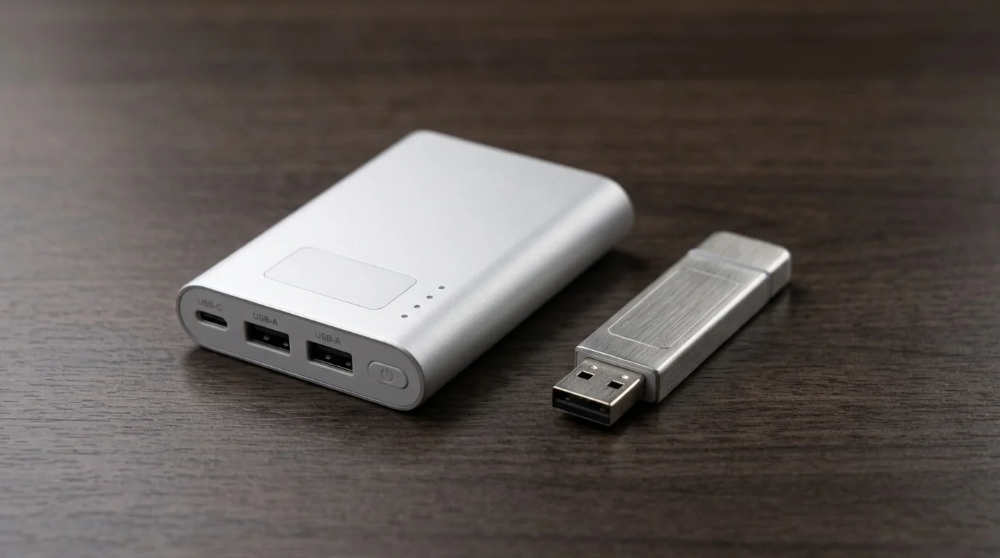
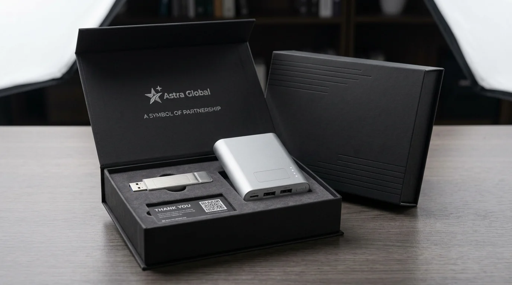

Executive Series Souvenir Kantor Custom Logo dengan Finishing Premium Melayani Surabaya, Gresik, dan Sekitarnya
 Meilita Mujayanti (mel)
1 Agustus 2026
5 Menit Baca
Meilita Mujayanti (mel)
1 Agustus 2026
5 Menit Baca

Executive Series adalah kategori souvenir kantor custom logo dengan bahan dan teknik finishing premium yang dirancang untuk klien, mitra bisnis, atau jajaran manajemen, dengan cakupan layanan di area Surabaya, Gresik, dan sekitarnya.
Executive Series adalah kategori souvenir kantor custom logo dengan bahan dan teknik finishing premium yang dirancang untuk klien, mitra bisnis, atau jajaran manajemen, dengan cakupan layanan di area Surabaya, Gresik, dan sekitarnya. Executive Series menggunakan bahan berkualitas lebih tinggi dibanding souvenir kantor standar. Finishing premium mencakup teknik cetak dan pelapisan yang memberi kesan eksklusif. Kategori ini umumnya diperuntukkan bagi klien, mitra strategis, dan jajaran manajemen. Layanan mencakup area Surabaya, Gresik, dan wilayah sekitarnya dengan pertimbangan kebutuhan pengiriman lokal.
- Apa yang Dimaksud dengan Executive Series pada Souvenir Kantor?
- Apa yang Dimaksud dengan Finishing Premium pada Souvenir Kantor?
- Mengapa Perusahaan Memilih Executive Series untuk Klien atau Mitra Bisnis?
- Wilayah Mana Saja yang Dilayani untuk Souvenir Kantor Executive Series?
- Apa Saja Pertimbangan Sebelum Memesan Executive Series?
- Kesimpulan
- FAQ
Apa yang Dimaksud dengan Executive Series pada Souvenir Kantor?
Executive Series adalah lini produk souvenir kantor custom logo yang menggunakan bahan pilihan dan proses finishing lebih detail untuk menghasilkan kesan eksklusif dan profesional.
Berbeda dari souvenir kantor standar yang mengutamakan fungsi dasar dengan harga terjangkau, Executive Series lebih menekankan pada kualitas tampilan dan sensasi penggunaan. Produk dalam kategori ini biasanya menggunakan bahan seperti logam, kulit sintetis berkualitas tinggi, atau kayu dengan proses finishing halus.
Kategori ini umumnya dipilih untuk momen-momen penting, seperti pemberian souvenir kepada klien besar, mitra strategis, atau sebagai hadiah apresiasi bagi jajaran manajemen dan direksi perusahaan.

Apa yang Dimaksud dengan Finishing Premium pada Souvenir Kantor?
Finishing premium pada souvenir kantor mengacu pada proses akhir produksi yang meningkatkan kualitas tampilan dan daya tahan produk, seperti pelapisan matte, ukiran presisi, atau pencetakan logo dengan teknik timbul.
Beberapa teknik finishing yang umum digunakan dalam kategori premium antara lain laser engraving untuk mengukir logo secara presisi pada permukaan logam atau kayu, hot stamping untuk memberi efek logo timbul dengan warna metalik, serta pelapisan matte atau glossy yang memberi kesan permukaan lebih halus dan rapi.
Selain teknik cetak, finishing premium juga mencakup detail kemasan. Produk dalam kategori Executive Series umumnya disertai kemasan khusus, seperti kotak presentasi atau pouch berbahan lembut, yang menambah kesan eksklusif saat souvenir diserahkan kepada penerima.
Pemilihan teknik finishing perlu disesuaikan dengan jenis bahan produk. Sebagai gambaran umum, tidak semua teknik cocok diterapkan pada semua material, sehingga konsultasi dengan tim produksi menjadi penting untuk memastikan hasil akhir yang optimal.
Mengapa Perusahaan Memilih Executive Series untuk Klien atau Mitra Bisnis?
Perusahaan memilih Executive Series untuk klien atau mitra bisnis karena kategori ini memberikan kesan penghargaan yang lebih tinggi dan mencerminkan keseriusan hubungan bisnis yang dijalin.
Pemberian souvenir kepada klien atau mitra strategis bukan sekadar formalitas, melainkan bagian dari strategi menjaga relasi bisnis jangka panjang. Souvenir dengan finishing premium menunjukkan bahwa perusahaan menempatkan penerima pada posisi yang dihargai, sehingga dapat memperkuat kepercayaan dan loyalitas dalam hubungan kerja sama.
Selain itu, kualitas produk premium juga mencerminkan citra perusahaan itu sendiri. Souvenir yang tampil rapi dan tahan lama secara tidak langsung menyampaikan pesan bahwa perusahaan memperhatikan detail dan kualitas dalam setiap aspek operasionalnya, termasuk hal-hal yang tampak kecil seperti pemilihan merchandise.
Wilayah Mana Saja yang Dilayani untuk Souvenir Kantor Executive Series?
Layanan souvenir kantor Executive Series mencakup wilayah Surabaya, Gresik, dan sekitarnya, dengan pertimbangan kemudahan koordinasi produksi dan pengiriman untuk kebutuhan perusahaan di area tersebut.
Cakupan area ini dipilih untuk memastikan proses konsultasi desain, revisi produk, hingga pengiriman souvenir dapat berjalan lebih efisien bagi perusahaan yang berada di kawasan industri dan bisnis Surabaya serta Gresik. Kedekatan wilayah juga memungkinkan proses pengecekan kualitas produk secara langsung sebelum souvenir diserahkan kepada klien akhir.
Bagi perusahaan di sekitar wilayah tersebut, kedekatan lokasi turut memberi keuntungan dalam hal fleksibilitas waktu produksi, terutama untuk pesanan dengan tenggat yang ketat menjelang acara atau pertemuan bisnis penting.
Apa Saja Pertimbangan Sebelum Memesan Executive Series?
Pertimbangan sebelum memesan Executive Series meliputi kesesuaian bahan dengan kebutuhan acara, kompleksitas desain logo, serta waktu produksi yang dibutuhkan untuk proses finishing premium.
1. Kesesuaian Bahan
Bahan produk perlu disesuaikan dengan konteks penggunaan. Produk berbahan logam misalnya lebih cocok untuk souvenir yang bersifat permanen seperti plakat atau alat tulis eksekutif, sementara bahan kulit sintetis lebih sesuai untuk produk seperti agenda atau dompet kartu nama.
2. Kompleksitas Desain Logo
Kompleksitas desain logo juga perlu diperhatikan karena beberapa teknik finishing premium memiliki keterbatasan dalam mereproduksi detail warna atau gradasi yang terlalu rumit. Sebaiknya desain logo disederhanakan agar hasil akhir tetap presisi dan rapi.
3. Waktu Produksi
Waktu produksi untuk kategori Executive Series umumnya lebih panjang dibandingkan souvenir kantor standar karena melibatkan proses finishing tambahan. Oleh karena itu, perencanaan waktu pemesanan yang lebih awal sangat disarankan, terutama untuk kebutuhan acara dengan tanggal yang sudah ditentukan.
Butuh Executive Series untuk Klien atau Mitra Bisnis?
Konsultasikan kebutuhan Executive Series souvenir kantor custom logo Anda dengan tim kami untuk mendapatkan rekomendasi produk dan teknik finishing premium terbaik.
Konsultasi SekarangKesimpulan
Executive Series souvenir kantor custom logo menjadi pilihan tepat bagi perusahaan yang ingin memberikan kesan eksklusif kepada klien, mitra bisnis, atau jajaran manajemen melalui bahan dan finishing premium. Dengan layanan yang mencakup area Surabaya, Gresik, dan sekitarnya, proses konsultasi hingga produksi dapat berjalan lebih efisien. Perencanaan waktu, pemilihan bahan, dan penyederhanaan desain logo menjadi faktor penting untuk memastikan hasil akhir souvenir tetap presisi dan mencerminkan kualitas premium yang diharapkan.
FAQ Seputar Executive Series Souvenir Kantor